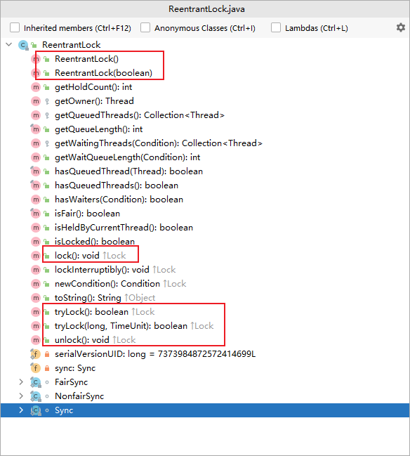
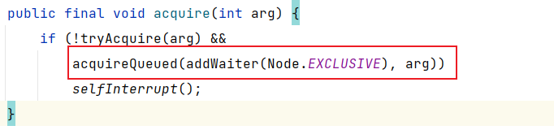

什么是ReentrantLock
ReentrantLock是一种基于AQS框架的应用实现，是JDK中的一种线程并发访问的同步手段，它的功能类似于synchronized是一种互斥锁，可以保证线程安全。
特点
- 可中断
- 可以设置超时时间
- 可以设置为公平锁
- 支持多个条件变量
- 同
synchronized一样，支持可重入
synchronized与ReentrantLock区别
| sYNCHRONIZED | rEENTRANTLOCK | |
|---|---|---|
| 层级 | JVM层级 | JDK层级 |
| 锁状态 | 无法在代码中直接判断 | 可以通过isLocked判断 |
| 公平 | 非公平锁 | 可以是公平也可以非公平 |
| 中断 | 不可被中断 | lockinterruptibly可以中断 |
| 释放锁 | 发生异常会自动释放锁 | 在finally块中显示释放锁 |
| 获取锁 | 立即返回是否成功的tryLock()，等待指定时长的获取 |
已经在等待的线程是后来的线程先获得锁 |
| 队列，先进先出，先来的线程先获得锁 | 栈，先进后出 |
ReentrantLock用法
创建锁
公平锁
ReentrantLock lock = new ReentrantLock(true);
非公平锁
ReentrantLock lock = new ReentrantLock();
参数默认为false，所以传入false或者不传参数都是非公平锁
对临界区加锁
lock.lock();
加锁完成后，要将临界区代码使用try进行异常处理
必须显示解锁
在finally中显示的解锁
lock.unlock();
下面看几个例子，从锁的五个特性入手，进行针对性的理解
重入
1 | // 同一个锁，在线程1中加锁一次，并在线程1中调用线程2，输出结果正常 |
中断
需要在线程中手动设置为可中断，lock.lockInterruptibly();
显示调用中断锁：t1.interrupt();
1 | public static void main(String[] args) throws InterruptedException { |
超时
通过lock.tryLock()尝试获取锁，如果未获取到，直接返回失败
1 | if (!lock.tryLock()) { |
通过lock.tryLock(3, TimeUnit.SECONDS)尝试在指定时间内获取锁，如果在设定时间内获取到则放回true，否则返回false
1 | try { |
公平
先创建500个线程并启动线程，等所有线程创建好之后，然后去竞争锁，如果设置的为公平锁，那必然符合队列的先进先出原则（FIFO），若设置为非公平锁，那就可能出现后创建的线程在之前先执行。因为非公平锁在创建后会先尝试去获取一下锁，如果获取到则直接执行，如果获取不到才会放入等待队列中。
1 | //ReentrantLock lock = new ReentrantLock(true); //公平锁 |
条件变量
定义信号量为变量1，变量2
在主线程中，分别修改变量1和变量2的值，并分别调用相应条件的signal1.signal();，激活线程继续执行。
1 | //变量1 |
1 | //变量2 |
1 | private static ReentrantLock lock = new ReentrantLock(); |
输出结果
未获取到变量1，等待中…
未获取到变量2，等待中…
唤醒变量1等待线程
唤醒变量2等待线程
获取到变量1
获取到变量2
源码分析
带着问题看源码：
ReentrantLock加锁解锁逻辑- 如何实现公平与非公平
- 如何实现可重入锁机制
- 线程竞争锁失败的入队阻塞逻辑
- 获取锁的线程释放锁唤醒阻塞线程
- 竞争锁的逻辑如何实现
首先我们先看下ReentrantLock所有的方法，从方法的名称中我们也大概能判断相应的方法的功能。

Node说明
1 | static final class Node { |
ReentrantLock在进行线程判断的时候重点会使用到上面的几个参数进行判断。
加锁逻辑
先来看下公平锁：
acquire:以独占模式获取，忽略中断。 通过至少调用一次tryAcquire ，成功返回。 否则线程会排队，可能会反复阻塞和解除阻塞，调用tryAcquire直到成功。 此方法可用于实现方法Lock.lock 。

tryAcquire:tryAcquire 的公平版本。 除非递归调用或没有服务员或是第一个，否则不要授予访问权限。
非公平版本:执行不公平的 tryLock。 tryAcquire 在子类中实现，但两者都需要对 trylock 方法进行非公平尝试
addWaiter:为当前线程和给定模式创建和排队节点。参数：模式 – Node.EXCLUSIVE 为独占，Node.SHARED 为共享返回：新节点
此处因为初始化pred==null会先调用enq(node)进行等待队列的初始化，第二个线程再次调用到此方法时，pred不为null，则会进行入队操作
acquireQueued:以独占不间断模式获取已在队列中的线程。 由条件等待方法以及获取使用。
enq:将节点插入队列，必要时进行初始化。此处才对等待队列进行了初始化，此处非常值得学习，体会如何初始化一个队列
接下来我们再对比看下非公平锁：
对比可以看到，非公平锁比公平锁就多了一层判断
1 | if (compareAndSetState(0, 1)) |
方法中直接去尝试获取锁，如果锁获取成功，则直接设置独占所有者线程。这我们就能明白ReentrantLock就是通过这个判断来实现了公平锁和非公平锁。
解锁逻辑
unlock:尝试释放此锁。
如果当前线程是此锁的持有者，则持有计数递减。 如果保持计数现在为零，则释放锁。 如果当前线程不是此锁的持有者，则抛出IllegalMonitorStateException
release:以独占模式发布。 如果tryRelease返回 true，则通过解除阻塞一个或多个线程tryRelease实现。 此方法可用于实现方法Lock.unlock 。
unparkSuccessor:唤醒节点的后继节点（如果存在）。
解锁后去唤醒等待队列中的后继节点。
重入锁机制
在ReentrantLock中定义，在尝试获取锁时会进行判断定义的state的数值，如果获取到state是0，则说明是首次获取锁，加锁成功并设置当前拥有独占访问权限的线程。否则会判断当前线程尝试加锁线程是否为当前锁的线程，如果是同一个线程，那么会累加state值，从而支持可重入。

...
...
Copyright 2021 sunfy.top ALL Rights Reserved